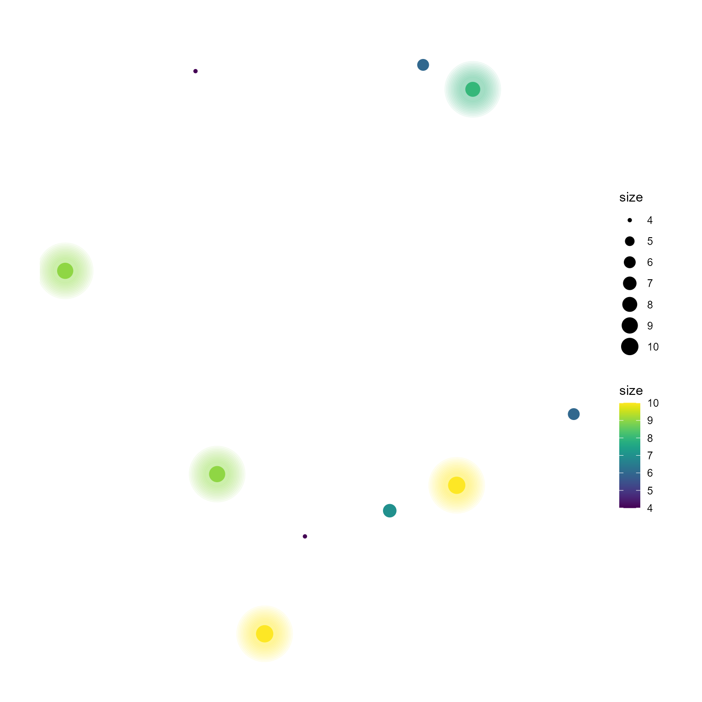
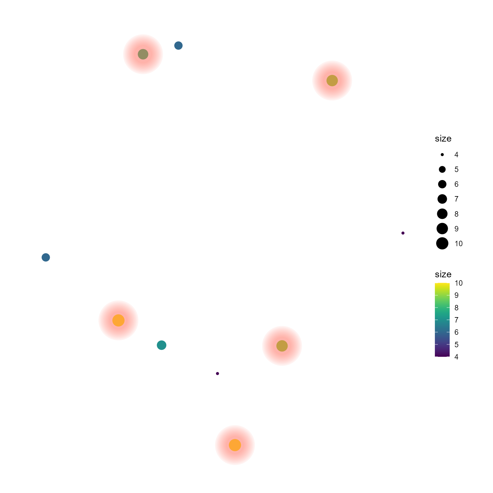
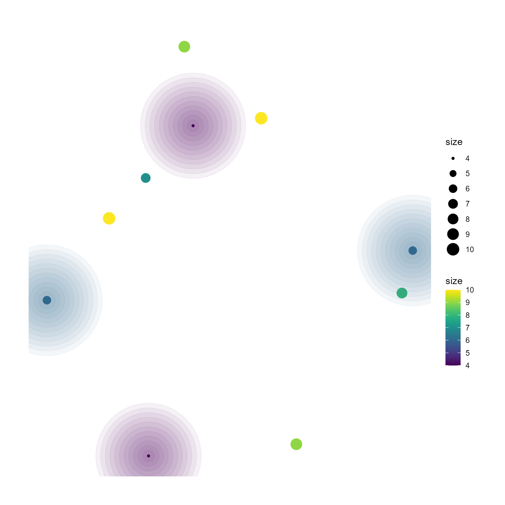
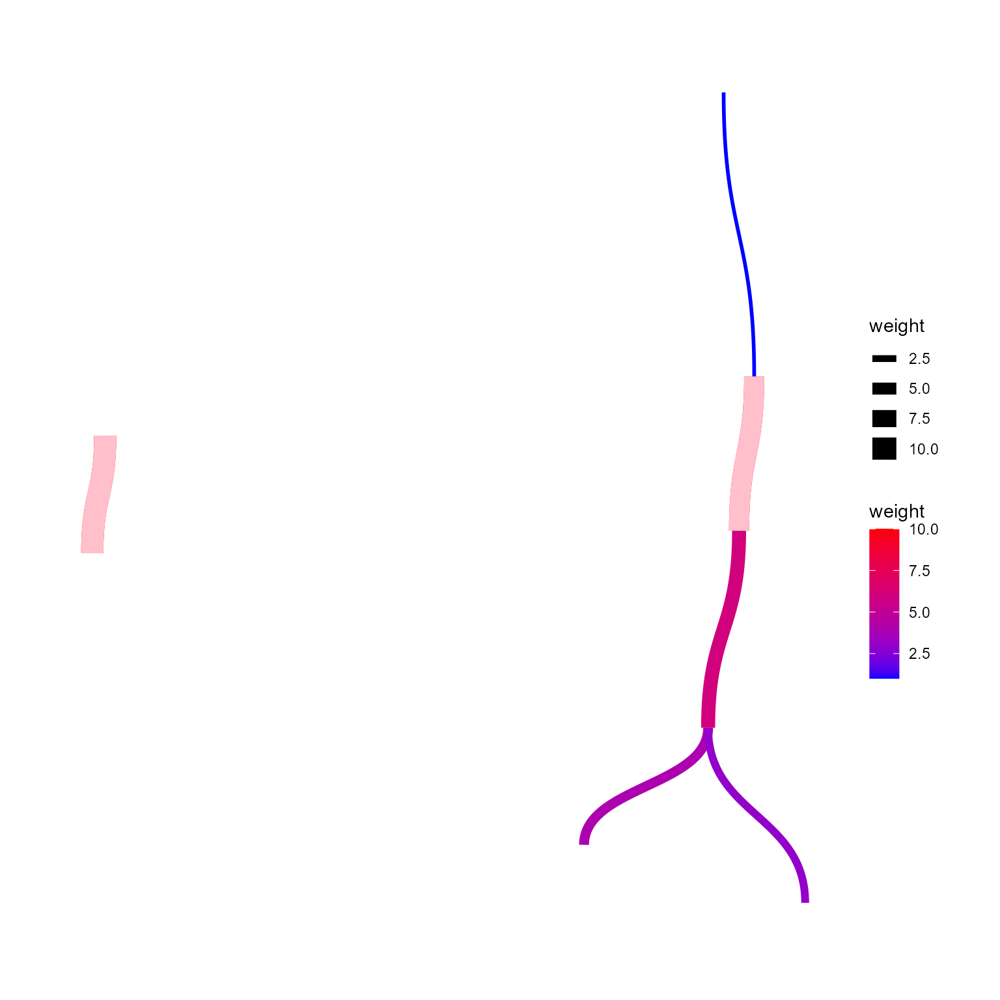
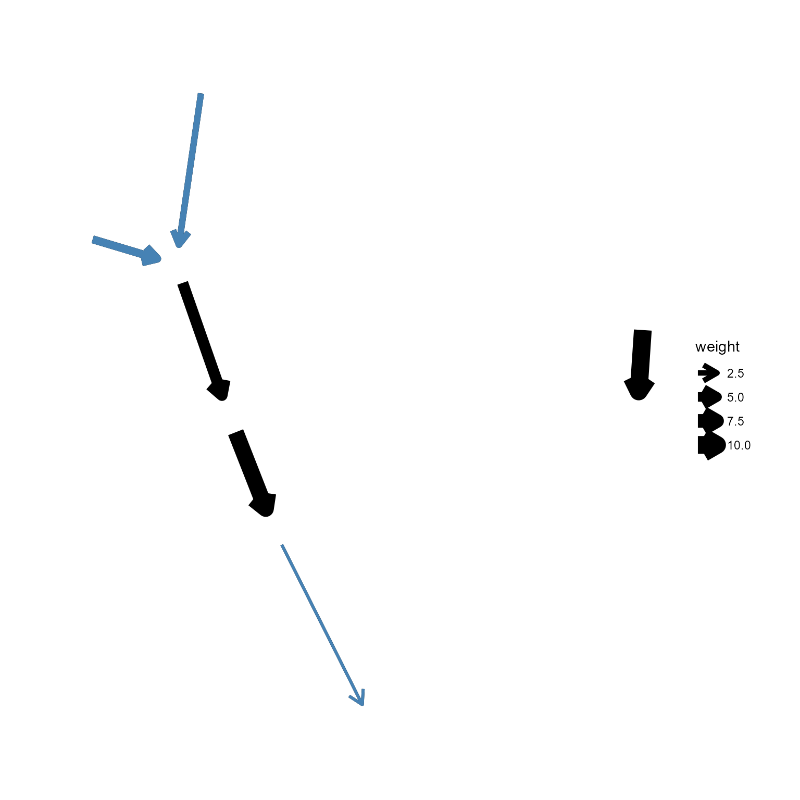
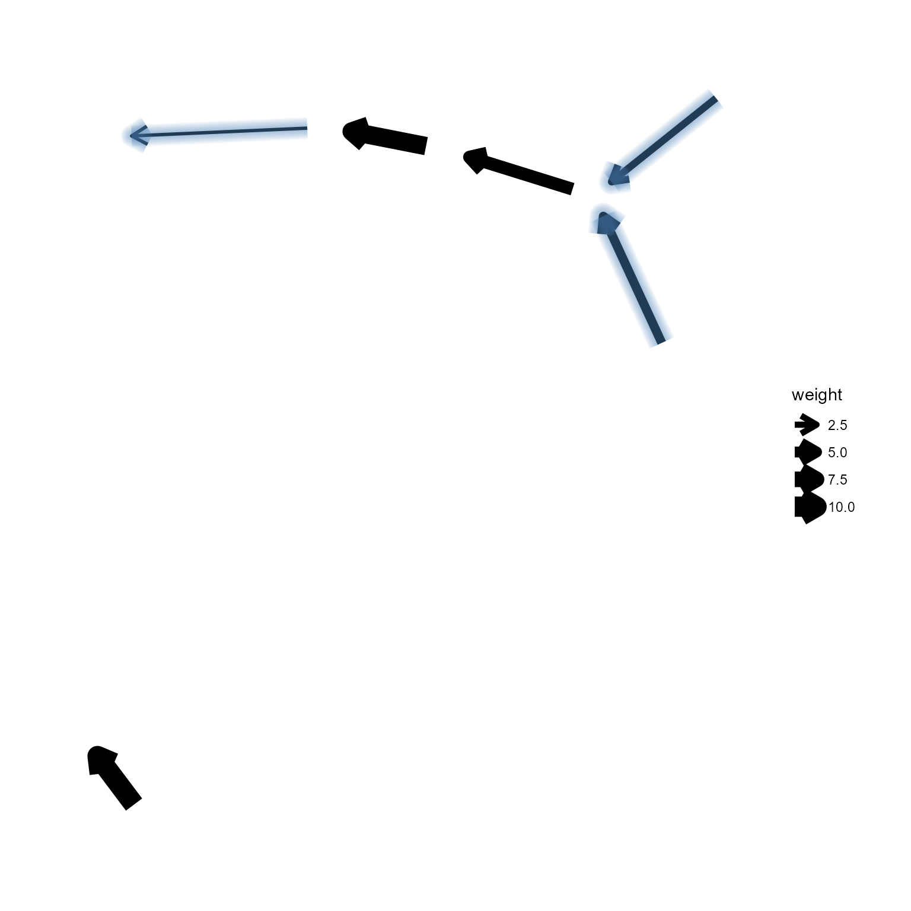
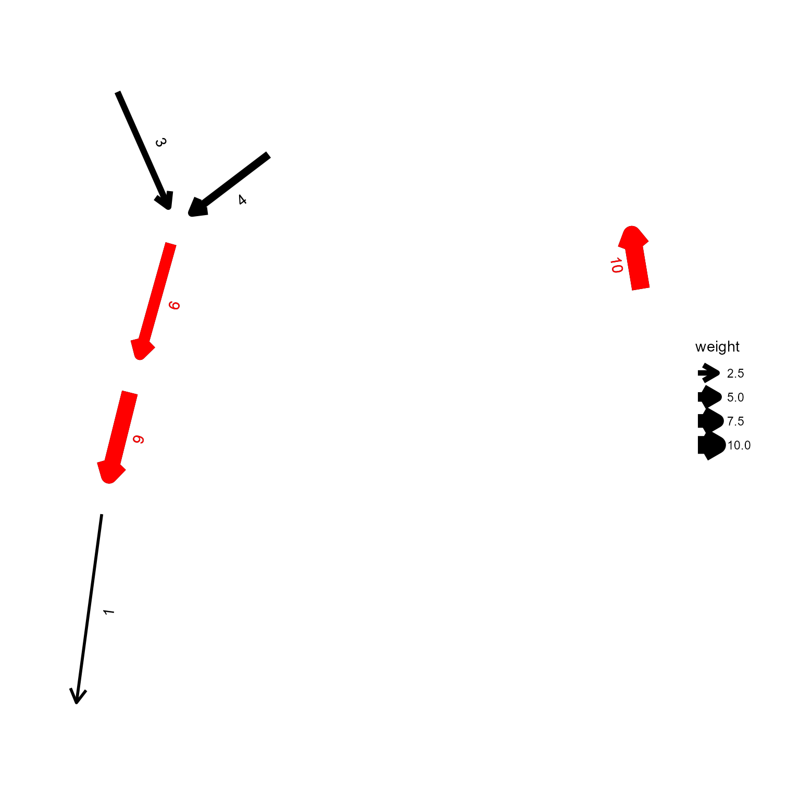
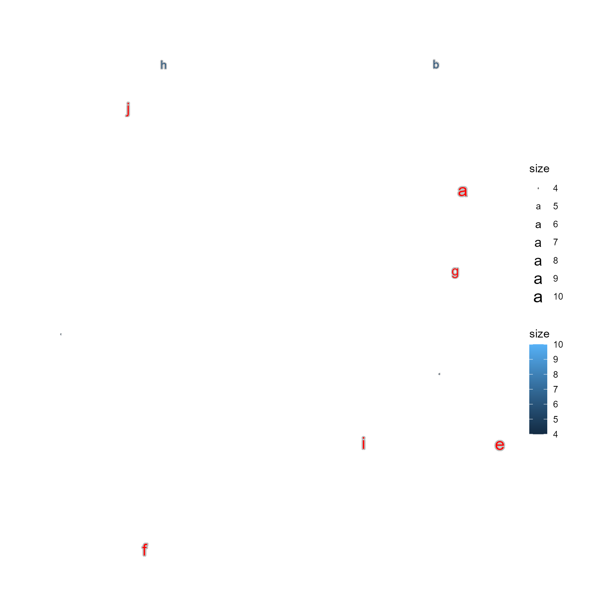
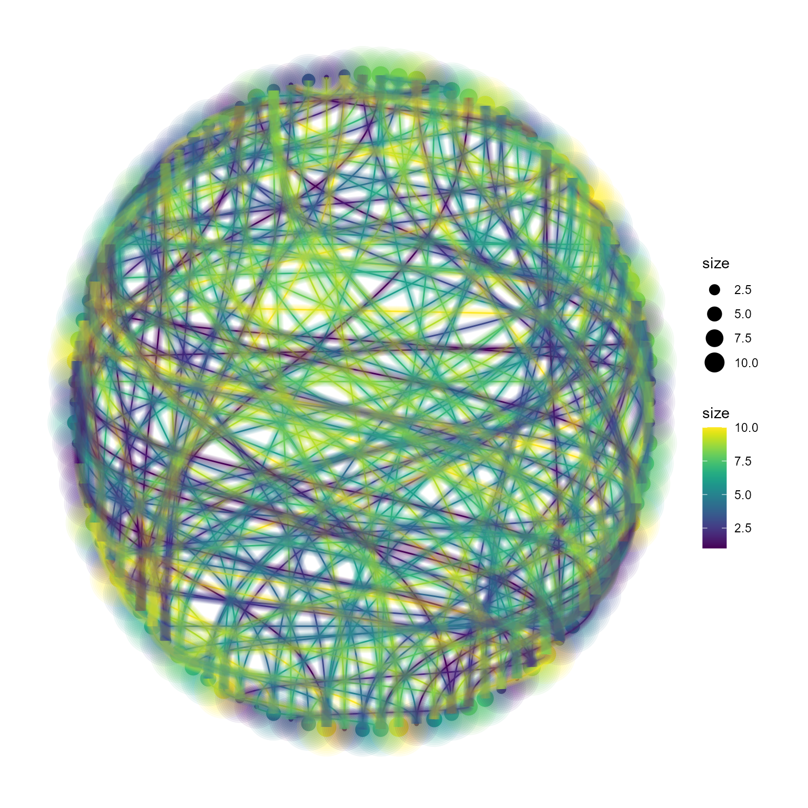

graphhighlight
Noriaki Sato
2023-03-27
usage_of_graphhighlight.Rmdgraphhighlight
This package highlights nodes, edges and node texts of ggraph plots when one wants to inspect the graph information after the plots are created.
Usage
Generate a random graph.
library(ggraph)
library(igraph)
library(graphhighlight)
set.seed(1)
g <- random.graph.game(10,0.1,directed=TRUE)
E(g)$weight <- sample(1:10, length(E(g)), replace=TRUE)
V(g)$size <- sample(1:10, length(V(g)), replace=TRUE)
V(g)$name <- letters[1:length(V(g))]highlight_node
This function highlights the nodes by specifying
node_name or filter specifying conditions for
including nodes in string. If highlight_color is specified,
the node color will be changed.
ggraph(g, layout="nicely")+
geom_node_point(aes(size=size))+
highlight_node(filter="size>7",
highlight_color="red")+
theme_graph()Or highlighting by some shapes by stacking the layers.
highlight_by_shape specifies highlighting by shape is to be
used, and specify_shape the shape,
specify_shape_size the size, shape_color the
color of the shape.
ggraph(g, layout="nicely")+
geom_node_point(aes(size=size))+
highlight_node(filter="size>7",
highlight_by_shape = TRUE,
specify_shape = 21,
specify_shape_size = 21,
shape_color="red")+
theme_graph()Or by making nodes glowing-look. The argument glow
should be set to TRUE. If no highlight_color
is specified, the raw colors of nodes are used.
ggraph(g, layout="nicely")+
geom_node_point(aes(size=size, color=size))+
scale_color_viridis()+
highlight_node(filter="size>7",glow=TRUE)+
theme_graph()
If highlight_color is specified and
glow_fixed_color is TRUE, that color is
used.
ggraph(g, layout="nicely")+
geom_node_point(aes(size=size, color=size))+
scale_color_viridis()+
highlight_node(filter="size>7",glow=TRUE,
highlight_color="tomato",
glow_fixed_color=TRUE)+
theme_graph()
glow_size controls how big the glowing will be.
glow_base_size will use base node size for glowing.
Otherwise the same parameters are used for stacking the layers.
ggraph(g, layout="nicely")+
geom_node_point(aes(size=size, color=size))+
scale_color_viridis()+
highlight_node(filter="size<7",glow=TRUE,
glow_size=5,
glow_base_size = TRUE)+
theme_graph()
The same glowing function is implemented for highlighting edges in
highlight_edge, but not for
highlight_node_text as for the text,
shadowtext by Prof. Guangchuang Yu implmented in
geom_node_text and geom_text_repel can
highlight the text much better.
highlight_edge
Edges can be highlighted in the same way as
highlight_node.
ggraph(g, layout="nicely")+
geom_edge_diagonal(aes(width=weight,
color=weight))+
scale_edge_color_gradient(low="blue",high="red")+
highlight_edge(filter="weight>7",
highlight_color="pink")+
theme_graph()
The same can be performed for the other geoms.
ggraph(g, layout="nicely")+
geom_edge_bend2(aes(width=weight,
color=weight))+
scale_edge_color_gradient(low="blue",high="red")+
highlight_edge(filter="weight>7",
highlight_color="pink")+
theme_graph()With the arrows.
ggraph(g, layout="nicely")+
geom_edge_link(aes(width=weight),
arrow = arrow(length = unit(4, 'mm')),
end_cap = circle(5, 'mm'),
start_cap = circle(5, "mm"))+
highlight_edge(filter="weight<5",
highlight_color="steelblue")+
theme_graph()
Glowing function can be applied by specifying glow to
TRUE. geom_edge_size controls how big the
glowing will be. Note that specifying big number will deteriorate the
looking.
ggraph(g, layout="nicely")+
geom_edge_link(aes(width=weight),
arrow = arrow(length = unit(4, 'mm')),
end_cap = circle(5, 'mm'),
start_cap = circle(5, "mm"))+
highlight_edge(filter="weight<5",
glow=TRUE,
highlight_color="steelblue",
glow_edge_size =0.5,
glow_fixed_color = TRUE,
glow_base_size =TRUE )+
theme_graph()
Coloring of edge labels is controlled by
change_label_color.
ggraph(g, layout="nicely")+
geom_edge_link(aes(width=weight,
label=weight),
angle_calc="along",
label_dodge = unit(5, 'mm'),
position="identity",
arrow = arrow(length = unit(4, 'mm')),
end_cap = circle(5, 'mm'),
start_cap = circle(5, "mm"))+
highlight_edge(filter="weight>5",
change_label_color=TRUE,
highlight_color="red")+
theme_graph()
highlight_node_text
ggraph(g, layout="nicely")+
geom_node_text(aes(label=name, color=size), repel=TRUE, bg.colour="grey")+
highlight_node_text(filter="size>5",highlight_color = "red")+
theme_graph()
Combine
g <- random.graph.game(100,0.05,directed=FALSE)
E(g)$weight <- sample(1:10, length(E(g)), replace=TRUE)
V(g)$size <- sample(1:10, length(V(g)), replace=TRUE)
V(g)$size <- sample(1:10, length(V(g)), replace=TRUE)
ggraph(g, layout="circle") +
geom_node_point(aes(size=size, color=size))+
scale_color_viridis()+
geom_edge_diagonal(aes(color=weight))+
scale_edge_color_viridis(guide="none")+
highlight_node(filter="size>0",glow=TRUE,glow_base_size = TRUE)+
highlight_edge(filter="weight>0",glow=TRUE,glow_base_size = TRUE)+
theme_graph()
## R version 4.2.1 (2022-06-23 ucrt)
## Platform: x86_64-w64-mingw32/x64 (64-bit)
## Running under: Windows 10 x64 (build 22621)
##
## Matrix products: default
##
## locale:
## [1] LC_COLLATE=Japanese_Japan.utf8 LC_CTYPE=Japanese_Japan.utf8
## [3] LC_MONETARY=Japanese_Japan.utf8 LC_NUMERIC=C
## [5] LC_TIME=Japanese_Japan.utf8
##
## attached base packages:
## [1] stats graphics grDevices utils datasets methods base
##
## other attached packages:
## [1] graphhighlight_0.1.0 igraph_1.4.1 ggraph_2.1.0
## [4] ggplot2_3.4.1
##
## loaded via a namespace (and not attached):
## [1] tidyselect_1.2.0 xfun_0.37 bslib_0.4.2 graphlayouts_0.8.4
## [5] purrr_1.0.1 colorspace_2.1-0 vctrs_0.6.0 generics_0.1.3
## [9] viridisLite_0.4.1 htmltools_0.5.4 yaml_2.3.7 utf8_1.2.3
## [13] rlang_1.1.0 pkgdown_2.0.7 jquerylib_0.1.4 pillar_1.9.0
## [17] glue_1.6.2 withr_2.5.0 tweenr_2.0.2 lifecycle_1.0.3
## [21] stringr_1.5.0 munsell_0.5.0 gtable_0.3.3 ragg_1.2.5
## [25] memoise_2.0.1 evaluate_0.20 labeling_0.4.2 knitr_1.42
## [29] fastmap_1.1.1 fansi_1.0.4 highr_0.10 tidygraph_1.2.3
## [33] Rcpp_1.0.10 scales_1.2.1 cachem_1.0.7 desc_1.4.2
## [37] jsonlite_1.8.4 farver_2.1.1 systemfonts_1.0.4 fs_1.6.1
## [41] gridExtra_2.3 textshaping_0.3.6 ggforce_0.4.1 digest_0.6.31
## [45] stringi_1.7.12 dplyr_1.1.0 ggrepel_0.9.3 polyclip_1.10-4
## [49] grid_4.2.1 rprojroot_2.0.3 cli_3.6.0 tools_4.2.1
## [53] magrittr_2.0.3 sass_0.4.5 tibble_3.2.0 tidyr_1.3.0
## [57] pkgconfig_2.0.3 MASS_7.3-57 viridis_0.6.2 rmarkdown_2.20
## [61] rstudioapi_0.14 R6_2.5.1 compiler_4.2.1